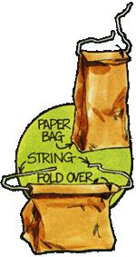
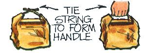
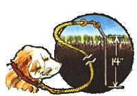
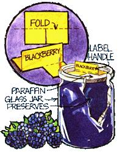
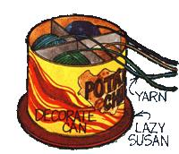
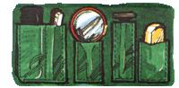
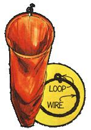
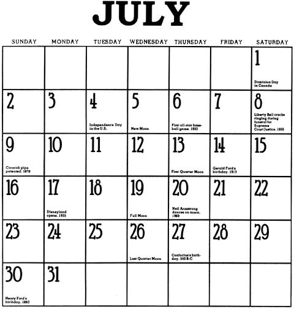
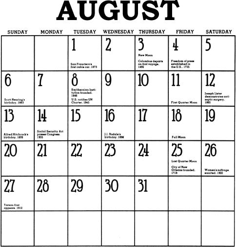

So . . . the next time you have to brownbag anything, fold some twine into the neck of the sack as shown in the sketch. When the ends are tied, you'll wind up with both a convenient handle . . . and a leakproof "seal" to prevent any of the contents from escaping.
Nine times out of ten, an animal tethered to a straight stake in the ground will wind the rope around the post till his movement becomes quite limited. An angled pin, however, can largely eliminate the critter's problem.
Just fashion a 22-inch length of one-inchround iron rod as depicted in the drawing, making sure to add an "eye" for tying and a "shoulder" to aid in driving the spike into the earth.
Now your pet, baby calf, goat, or whatever can move freely within the area you've selected for it.
Here's an easy-yet effective-way to give young transplants a good, strong start in dry weather.
Cut a small hole in the side of a tin can (about 1/2 inch up from the bottom) and "plant" the container alongside your seedling so that the opening will be near its roots. Then firm up the earth around both plant and can.
After that-if you keep the vessel filled with water-your crop of tomatoes, peppers, eggplants, etc., will not only survive a drought, but should also yield produce far earlier than any of your neighbors' unirrigated plants.
No matter how careful you are when removing a paraffin cover from your homemade jellies or jams, you almost always wind up having to fish small bits of broken wax out of the sticky treat. If you make neat-and convenient-labels like the one shown in the sketch, however, you'll find it much easier not only to identify your goodies, but also to lift the protective seal off intact.
Just embed the "arms" of each paper tab (lightweight cardboard is the best material to use) in the paraffin immediately after the melted liquid is poured over your preserves. Later, when you want to open a container, simply slide the tip of a pointed knife around the sealed edge (or heat the glass sufficiently to loosen the wax) and pull the entire cover free!
Every good cook knows that a single speck of yolk left in the white of an egg will prevent the white from whipping. (The trick is to make sure you separate the egg properly in the first place.)
So, the next time you face this problem, try breaking your hen fuit into a small funnel. The white should run right through while the yolk (all of it) stays behind.
Knit one . . . purl two . . . . untangle the yarn .....
How frustrating! . . . especially if you have to stop regularly to untwist the loose strand with one hand while you hold the needles carefully with the other (and try not to lose a stitch in the meantime). This clever little invention, however, can simplify the process.
First install some cardboard dividers in a footor-so-tall metal can (the kind potato chips come in) and set the container atop a Lazy Susan placed on the floor. Then drop your skeins of yarn into the empty compartments with the free ends hanging out the open top.
Now when you knit it'll be quite easy to keep the strands tangle-free. Just give the device an occasional spin with your foot!
To keep small, easy-to-lose items handy on a camping trip, sew a few patch pockets (made of the same or of a similar material) to the back wall of your tent. That way your soap, mirror, razor, etc., will always be right at hand when you want them.
Whether you buy a ready-made clothespin bag-or make your own from available scraps-you might find it helpful to replace the customary drawstring with a loop of wire that has an eyelet at its joint. The bag will then lie flat against a wall, yet always be fully open to give you easy access to your pins.
It's easy to rir home made curtains so they'll always hang evenly from your rods. Either tie a cord from one ring to the
next spacing the rings uniformly . . . or attach the cord at equal distances along the fabric's back. That way, a simple tug at the edge of the drapery will automatically adjust the folds just the way you want them...every time.
|
 JULY FLOWERS: WATER LILY OR CARNATION |
 AUGUST FLOWER: POPPY OR HEATHER |
 |
|
|
 |
 |
|
 |
 |
 |
|
 |
|
|